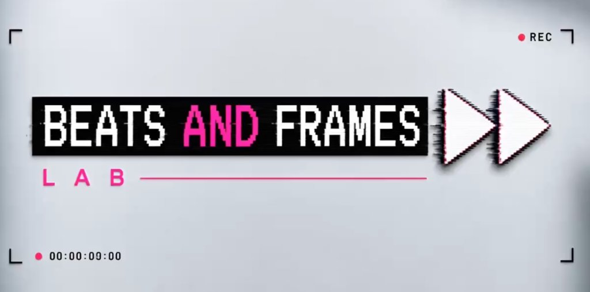

Direção Criativa
Direção de Cena & Conteúdo
Direção de filmes publicitários, videoclipes, documentários, séries de marca e conteúdos digitais com estética autoral e ritmo preciso.
Produtora de conteúdo, direção criativa, música e engenharia sonora por Kiko Costato. Domine narrativa, vídeo e som para contar histórias que deixam marca.

“A tecnologia muda.
A linguagem permanece.
A história é tudo.”
Soluções completas de ponta a ponta para marcas, agências, artistas, veículos e plataformas.
Direção de filmes publicitários, videoclipes, documentários, séries de marca e conteúdos digitais com estética autoral e ritmo preciso.
Da pesquisa histórica e escaleta ao roteiro, locução, design sonoro, exemplos musicais e masterização final pronta para distribuição.
Criação de trilhas originais, identidade sonora (sonic branding), restauração, mixagem imersiva e produção musical em estúdio.
Estruturação de formatos seriados, bíblias de projeto, curadoria musical/histórica e adaptação bilíngue (PT-BR e Inglês).
Navegue pelas 6 séries completas, confira as tracklists, capas históricas e acesse os players de cada formato.
Para manter www.beatsandframes.com.br 100% blindado contra notificações DMCA ou cobranças indevidas de direitos fonográficos:
Atendimento direto com o diretor e produtor Kiko para projetos audiovisuais, podcasts corporativos, séries documentais e licenciamento.